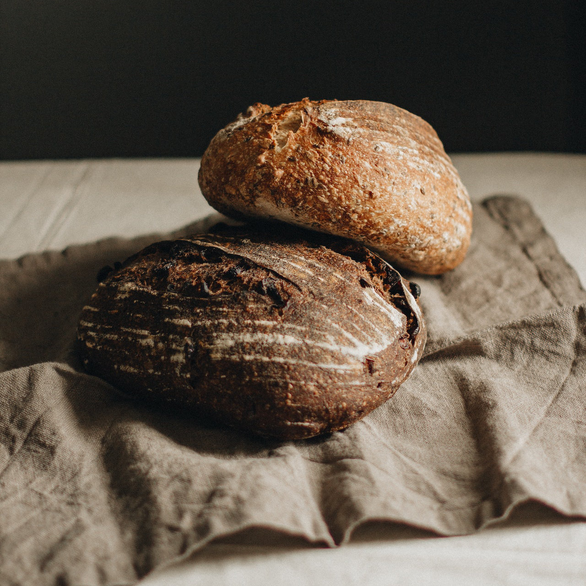

Sourdough Bread

Description
This sourdough bread recipe creates a beautiful loaf with deep flavors and a mild tang. It is separated into 3 sessions, each separated by a couple hours of waiting to ensure that the dough has proofed properly.
Ingredients
- 200 g sourdough starter 1
- 400 ml water
- 600 g bread flour
- 10 g fine sea salt
1 If you do not already have one, you can use this recipe to make your own sourdough starter!
Steps
Session 1
- In a bowl, mix the sourdough starter with the water.
- Put the flour in a large bowl, making a well in the center, and add the starter and water.
- Mix the ingredients until it becomes a rough dough, and let it rest for about 45 minutes. Make sure that the bowl is covered, either with a towel or with plastic wrap.
- Take the dough out of the bowl and put it on a lightly floured surface. Add salt to the dough and knead it for about 10 minutes or until it's uniform and stretchy.
- Put the dough back in a large bowl and let it rest for 4 hours. Again, make sure that the bowl is covered.
Session 2
- Take the dough out of the bowl and put it on a lightly floured surface. Knead it for about 10 minutes.
- Form the dough in the shape of a ball and cover it with plastic wrap. Let it rest for 30 minutes.
- Remove the plastic wrap, and gently stretch the dough and fold it on itself from bottom to top.
- Turn the dough 90 degrees and repeat the previous step. Do this 4 times in a row.
- Without kneading it, form and stretch the dough in the shape of a ball.
- Place the dough inside a proofing basket, with the seam facing upwards. Cover the basket with a towel and put it inside a plastic bag, so that the dough doesnt dry while it's proofing.
- Put the dough inside the fridge and let it rest for 8 to 12 hours. The timing of this works best when you let the dough rest overnight.
Session 3
- Take the dough out of the fridge and let it rest at room temperature for about 1 hour.
- Put Dutch oven (with lid on) inside your oven and preheat to 450 F.
- Once the oven has reached its temperature, put the dough inside the Dutch oven and scar the dough. Cover with lid and bake in the oven for 50 minutes.
- Remove bread from the oven and let it rest on a cooling grid for 15 minutes.
- ENJOY!
Return to Home Page